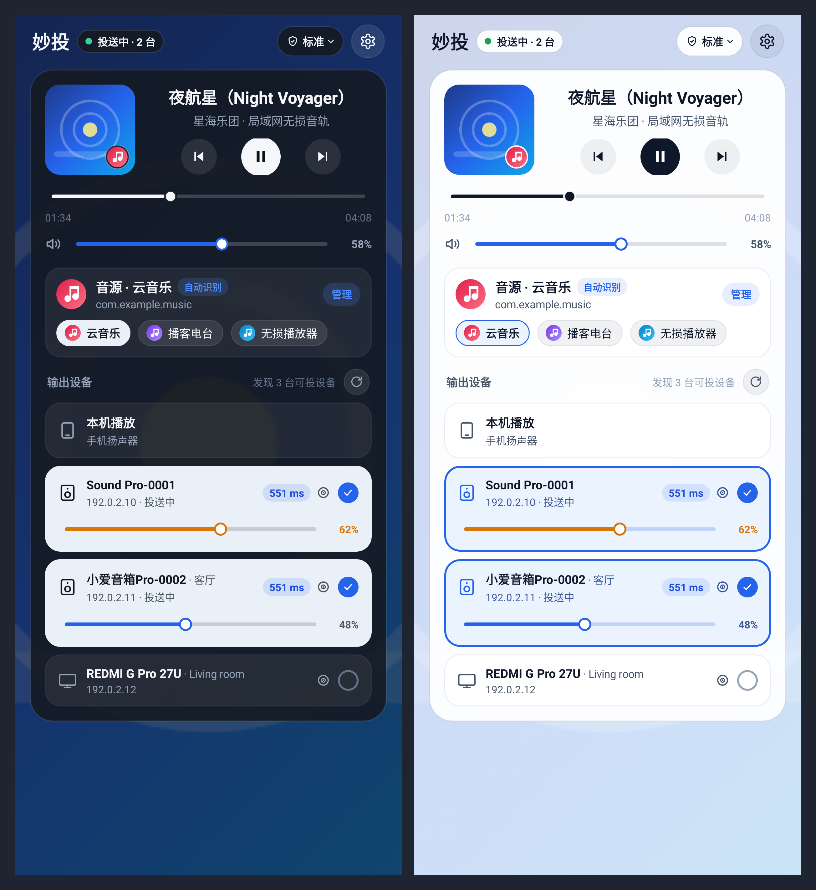
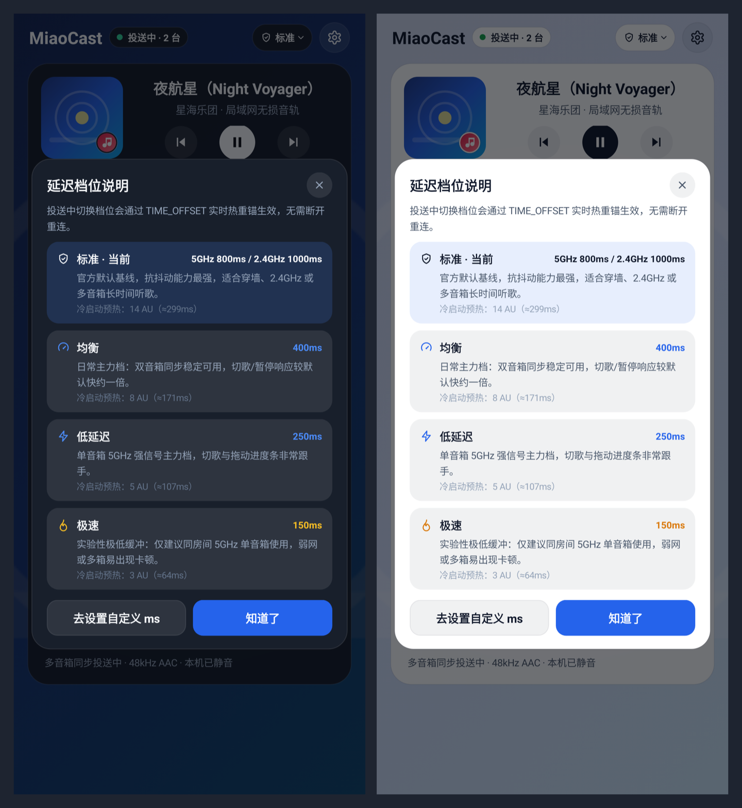
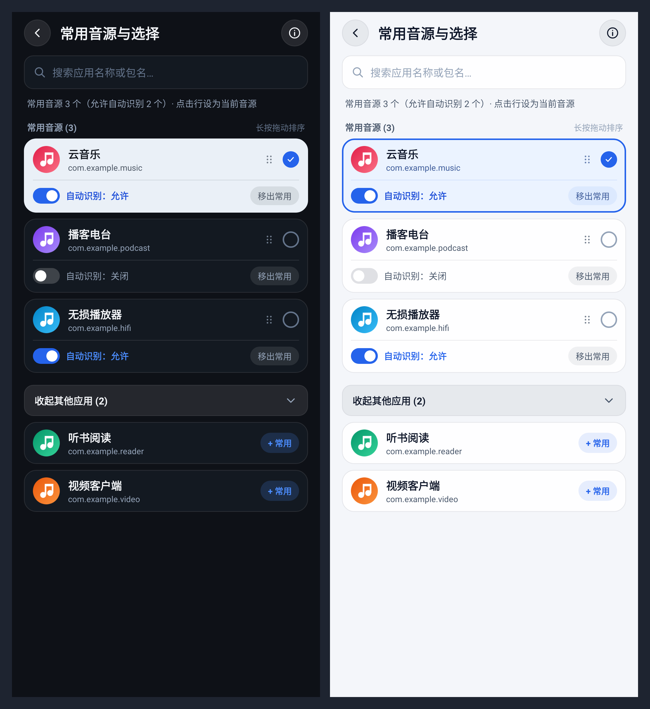
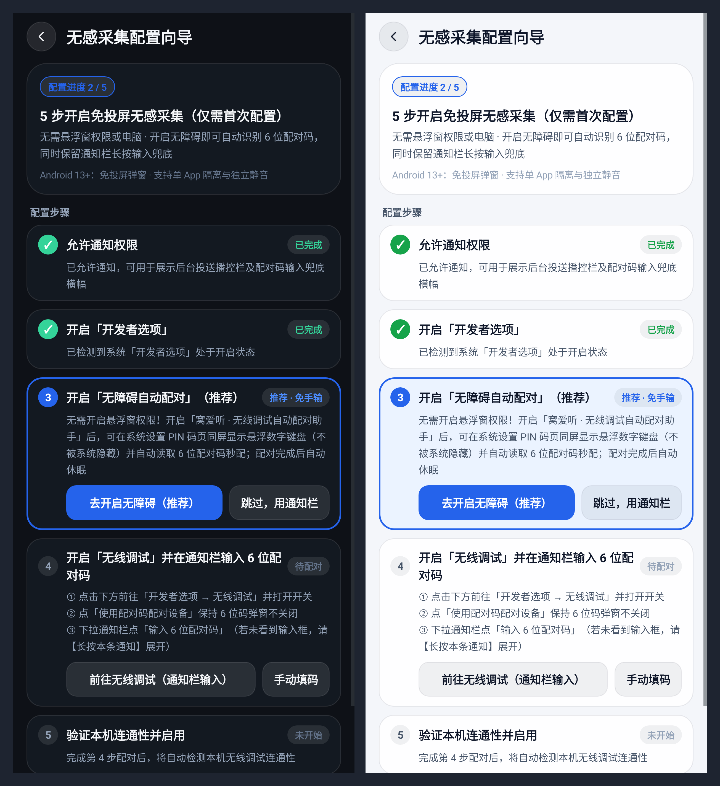
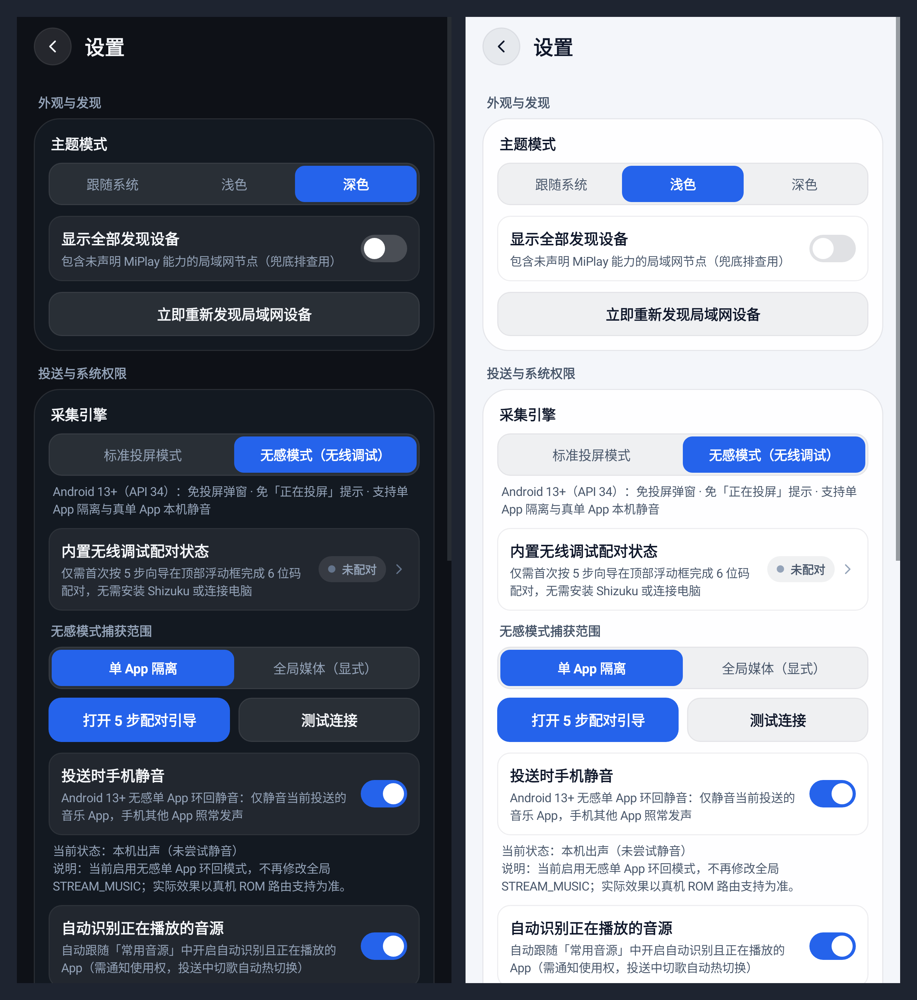
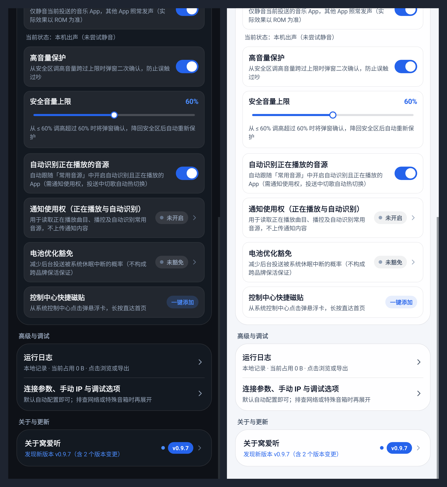
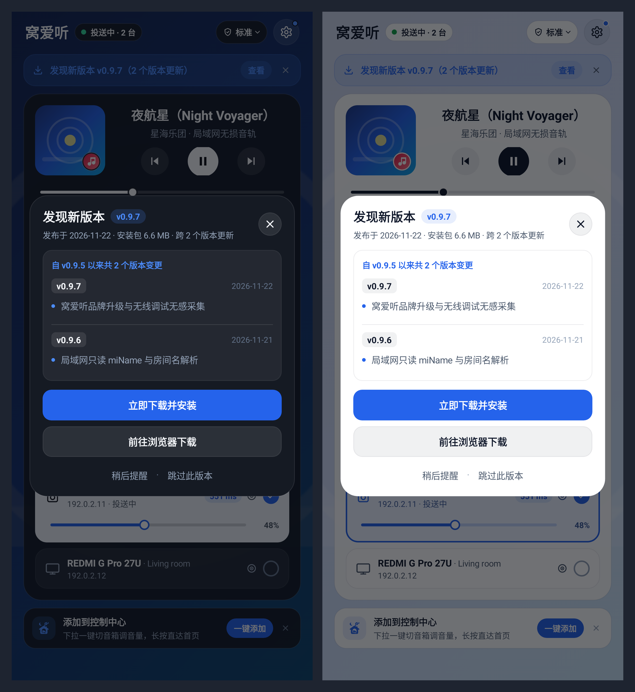
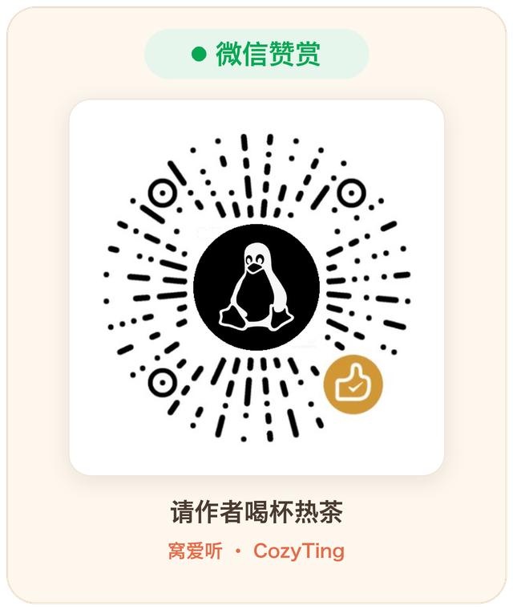

打破品牌壁垒，局域网开箱直连
华为、三星、OPPO、vivo、一加、Pixel 均可免 Root 接入家庭 Wi-Fi 内的 MiPlay 小米 / 小爱音箱，零云端中转、免登录小米账号。
窝爱听（CozyTing） 是一款免费开源的第三方 MiPlay 纯局域网音频投送应用（Android 10+，iOS 规划中）。 不限手机品牌、无需 Root、免登录小米账号，直接将你选定的单个音乐 App 高保真投送到家里一台或多台小米 / 小爱音箱（最多 63 台毫秒级同频），把工作语音与通知留在手机，房间里只流淌你喜欢的歌。

忙碌加班到深夜，推开家门回到自己亮着暖灯的小窝，打开喜欢的歌单让音乐流满房间、瞬间卸下疲惫——这是「窝爱听 / CozyTing」想守护的日常片刻。
对比普通蓝牙、原厂小米妙播与系统整机投屏，窝爱听在品牌自由度、多房间同步与单 App 隐私隔离上兼得平衡。
| 对比维度 | 窝爱听（CozyTing） | 普通蓝牙连接 | 原厂小米妙播 | 整机投屏 / 录屏 |
|---|---|---|---|---|
| 手机品牌限制 | 不限品牌（任意 Android 10+；iOS 规划中） | 不限品牌 | 仅限部分小米 / Redmi 机型 | 不限品牌 |
| 多音箱全屋同频 | 最多 63 台毫秒级同步，播放中随时增减 | 通常仅 1 台，多箱易回声 | 支持多台 MiPlay 设备 | 单台或延迟大 |
| 单 App 隔离不串音 | 只投选定音乐 App，微信语音与通知绝不外放 | 手机全部声音一并外放 | 支持指定媒体源 | 整机音画全广播 |
| 刷视频不暂停音乐 | Android 13+ 无感模式支持双区音频焦点隔离 | 刷视频立刻抢断音箱音乐 | 视系统版本而定 | 无法隔离 |
| 延迟调节与响应 | 4 档延迟（150–1000ms）+ 自定义 ms 免重连秒切 | 不可调 | 不可调 | 不可调 |
| 隐私、账号与开源 | 零云端、免登录小米账号、AGPL-3.0 开源 | 本地闭源 | 绑定小米账号与系统生态 | 依厂商服务而定 |
把复杂的多箱时钟同步与局域网协议藏在幕后，前端只留干净直观的听歌体验。
华为、三星、OPPO、vivo、一加、Pixel 均可免 Root 接入家庭 Wi-Fi 内的 MiPlay 小米 / 小爱音箱，零云端中转、免登录小米账号。
严格单 App 音频隔离，绝不静默退化为全系统录屏或麦克风收音。客厅放音乐时，微信语音、短视频和来电提醒不再社死外放。
按 4 步向导输入一次 6 位配对码即可告别反复投屏弹窗与红点，并解锁真·单 App 本机静音与双区音频焦点隔离（刷视频不暂停音箱音乐）。
支持一次勾选客厅、卧室、书房多台音箱同步播放，独立调节每台音量、实时显示房间名与播放延迟，听歌途中随时加减音箱不中断。
顶栏随时在标准（800/1000ms）、均衡（400ms）、低延迟（250ms）、极速（150ms）与自定义 ms 间实时切换，无需断开重连。
自由管理常用音乐 / 播客 App 并独立开启自动识别；专辑封面氛围底色、深浅三态主题与 SHA-256 校验安全更新（支持一键关闭零外网）。
无旁白实机风格演示：打破安卓品牌限制、网易云 / QQ 音乐 / 汽水音乐自动切源、手机刷短视频与音箱放歌互不打扰、全屋多音箱同频 × 4 档延迟热切与零云端纯局域网直连。
所有界面均由 Android 真实视图代码直接渲染输出，清晰呈现高频日常功能。






需要 Android 10（API 29）及以上 arm64-v8a 设备。前往 GitHub Releases 获取正式签名安装包。
手机与小米 / 小爱音箱连在同一路由器局域网下，打开窝爱听即可自动发现支持 MiPlay 的音箱设备。
默认标准模式开箱即用；Android 13+ 可在设置中一键配置无感模式，享受免弹窗与双区音频焦点隔离。
覆盖设备兼容、隐私边界、无线调试与平台支持的高频疑问。
cozyting_core.h C ABI 与 XCFramework 构建流水线）与跨端视觉规范已经就绪，原生 SwiftUI + ReplayKit iOS 客户端正在规划推进中。窝爱听（CozyTing）所有功能永久免费开源、纯局域网零云端，绝无付费墙或隐藏特权。如果它帮你盘活了家里的小爱音箱、陪你度过了几个轻松的听歌夜晚，欢迎给仓库点个 Star，或随心自愿赞赏支持持续维护。
